B2Bi Configuration Part 2
In this chapter, learn how to create a B2Bi partner community, add partners to the community, create a routing template, and create routing channels.
Create a partner community
- Return to the OpenShift web console and click on the route link to the IBM Sterling File Gateway user interface (UI): sterling-fg-b2bi-asi-internal-route-filegateway.

- Enter fg_sysadmin in the User ID field, password in the Password field, and then click the Sign In button.

- Click the Participants pull-down menu item on top menu bar.

- Click Communities in the Participants menu.

- In the Communities pop-up window, click the add link.

- Enter sftp_community in the Community Name entry field and click Next.

- Select both the Partner Initiates Protocol Connections to Mailbox and the Partner Listens for Protocol Connections.
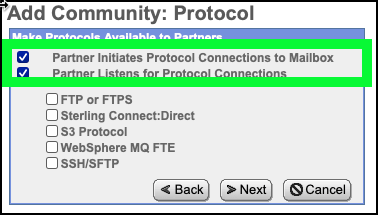
- Select the SSH/SFTP checkbox and click Next.

- Click Next on the Add Community: Notifications form.
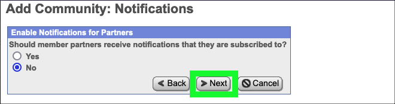
- Click Finish to confirm the creation of the new community.
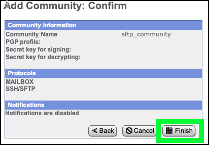
- Click Return on the community confirmation screen.

Add partners to the partner community
Next, add 2 partners to the newly created sftp_community.
- Click the edit link for the sftp_community on the Communities pop-up window.
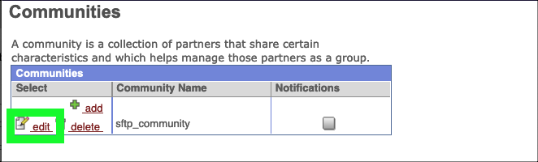
- Under Partner, click the Add link.

- Enter partner1 in the Partner Name field, 10 digits in the Phone field, partner1@localhost.com in the Email Address field, and then click Next.

- Enter partner1 in the User Name field, password in the Password field, password in the Confirm Password field, Partner in the Given Name field, One in Surname field, and then click Next.

- Click partner1 is a Producer of Data and then click Next.

- Review the default settings on the Initiate Connections Settings screen and then click Next.
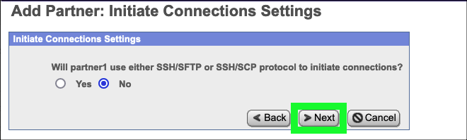
- Review the default settings on the PGP Settings screen and then click Next.
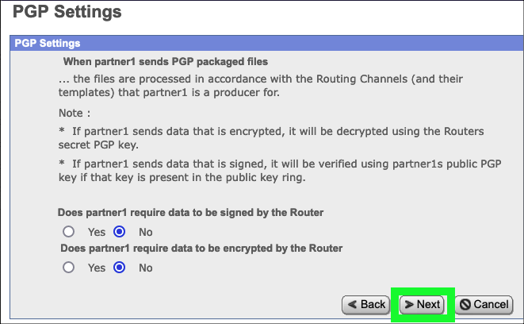
- Review the settings for partner1 and click Finish.

- Click Return on the Added Partner Successful screen.
- Repeat the Steps 13 through 20 to create a second partner named partner2 using the same settings.
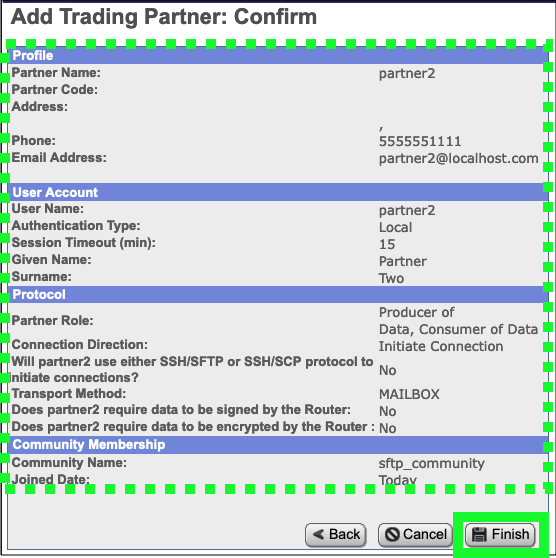
- Click Return on the Edit Community: sftp_community screen after creating both partners.

- Close the Communities pop-up window.

- Click Partners under the Participants menu.
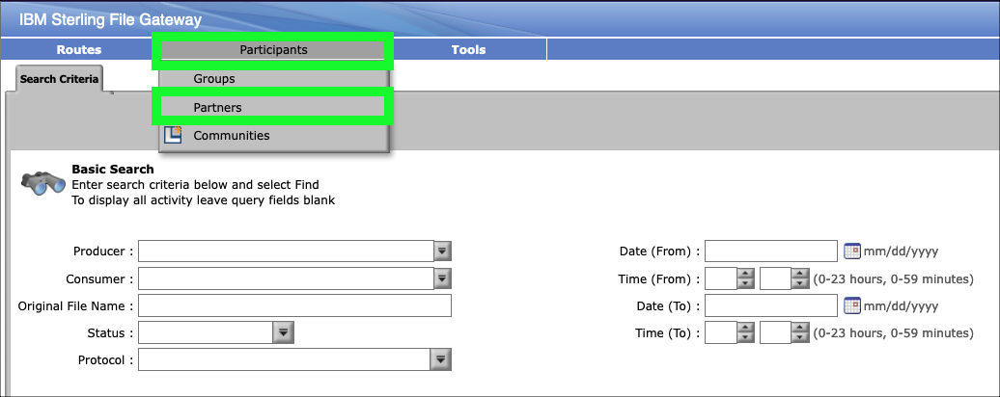
- Click the Refresh button if partner1 and partner2 do not appear in the Partners table.
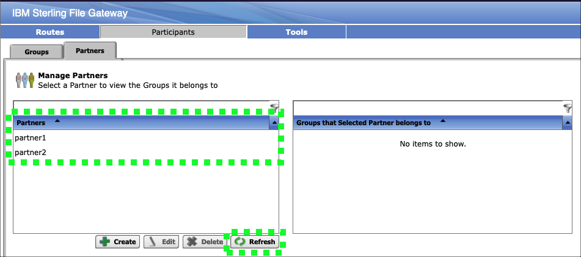
Create a routing template
- Click Templates under the Routes menu.

- Click the Create button at the bottom of the Routing Channel Templates page.

- Enter Passthrough in the Template Name field and then click Next>>.
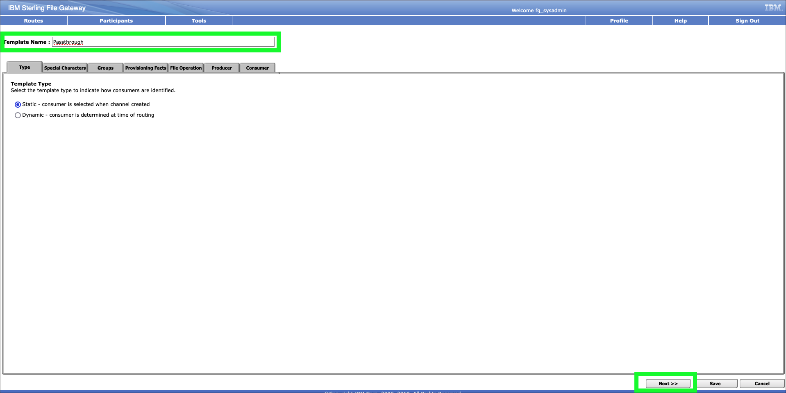
- Review the Special Characters settings and then click Next>>.

- Add All Partners to both the Producer Groups and Consumer Groups tables.
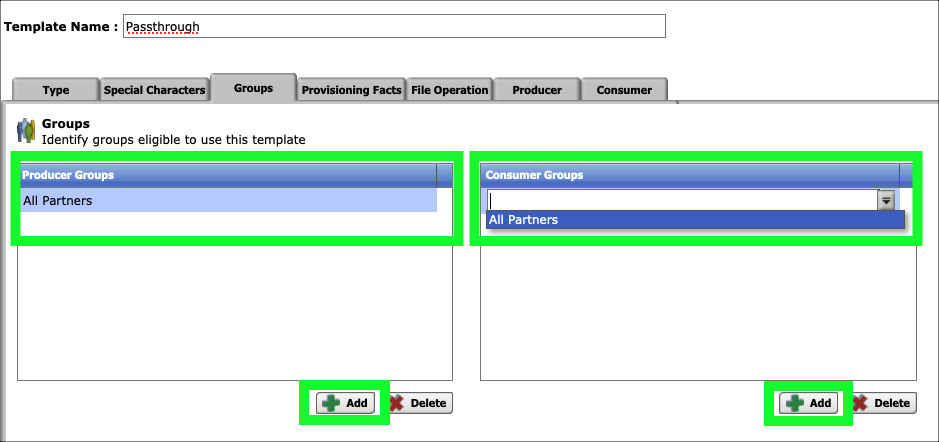
- Click Next>> after adding All Partners to both groups.

- Review the Provisioning Facts page and then click Next>>.
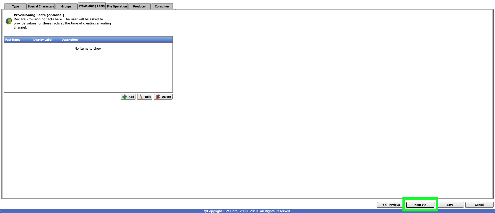
- Review the File Operation page and then click Next>>.
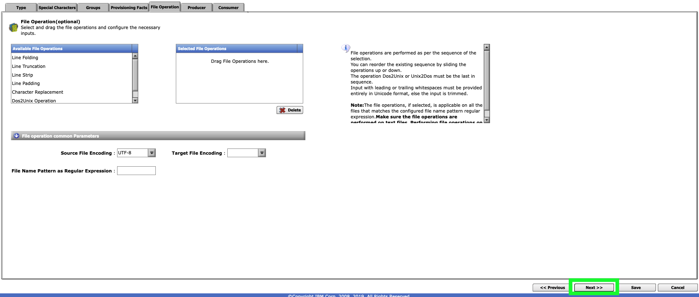
- Click the Add button on the Producer page.
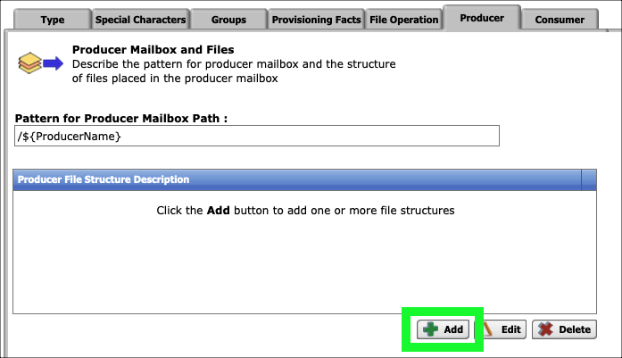
- Click the Producer File Type pull-down menu and select Unknown.
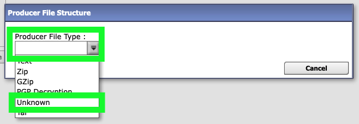
- Enter .+ in the File name pattern as regular expression field and then click Save.
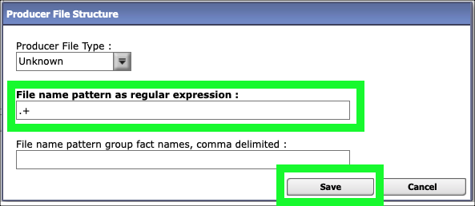
Setting the file pattern to the regular expression .+ allows for file names of one or more characters.
- Click Next>> on the Producer page.
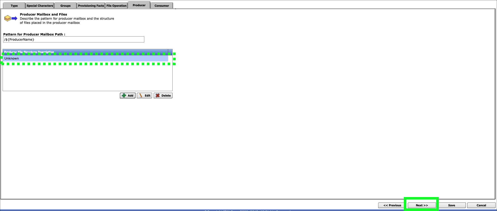
- Click the Add button on the Consumer page.
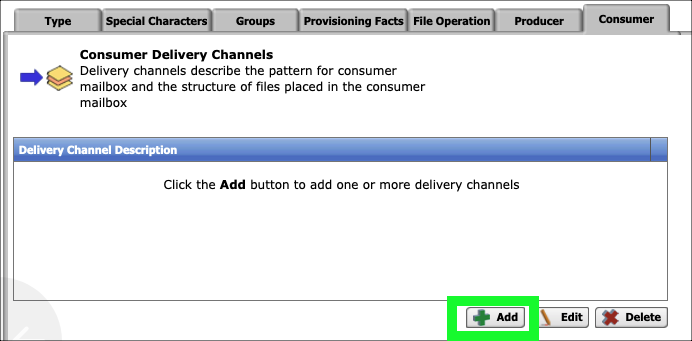
- Click the Add button on the New Delivery Channel pop-up window.
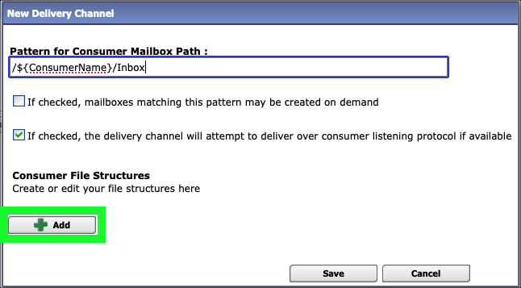
- Click Unknown in the Consumer File Type pull-down menu.
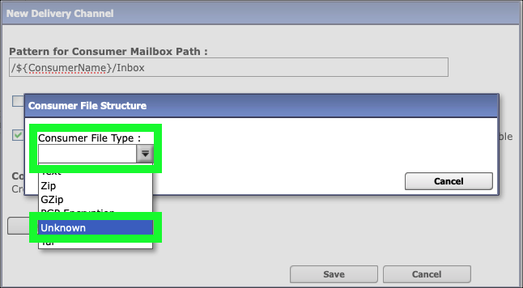
- Enter ${ProducerFileName} in the File name format* field.
- Review the help information regarding file name formats by hovering over the File name format entry field and then click Save.
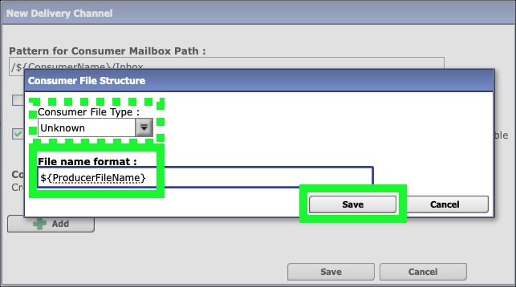
- Click Save on the New Delivery Channel pop-up window.

- Click Save on the Consumer page.
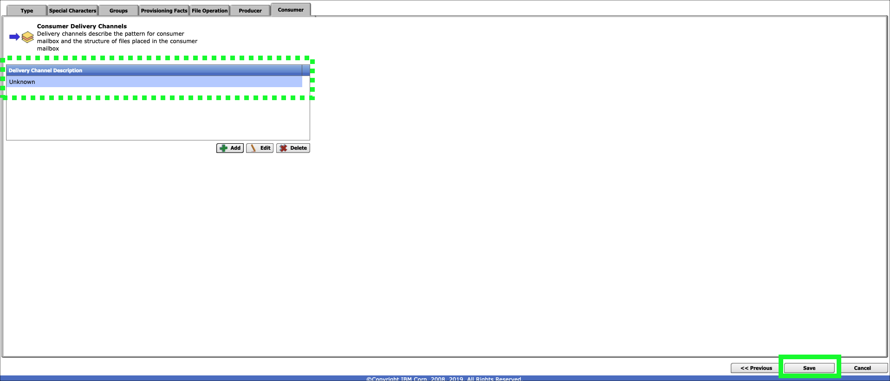
- Click OK on the Routing Channel Template successfully created. pop-up message.

- Review the settings for the new Passthrough routing channel template.

Create routing channels
- Click the Channels option under the Routes menu.

- Click the Create button at bottom right to create a new Channel.

- Select Passthrough for the Routing Channel Template, partner1 for the Producer, and partner2 for the Consumer, and then click Save to create the new channel.

- Click OK on the Success pop-up window.

- Repeat the steps 48 through 50 to create a channel from partner2 to partner1.
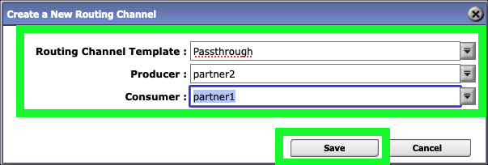
- Click Sign Out.

In the next chapter, the fun begins as the partners start to securely exchange files.